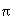

The Open Group Base Specifications Issue 7, 2018 edition
IEEE Std 1003.1-2017 (Revision of IEEE Std 1003.1-2008)
Copyright © 2001-2018 IEEE and The Open Group
5. File Format Notation
The STDIN, STDOUT, STDERR, INPUT FILES, and OUTPUT FILES sections of the utility descriptions use a syntax to describe the data
organization within the files, when that organization is not otherwise obvious. The syntax is similar to that used by the System
Interfaces volume of POSIX.1-2017 printf() function, as described in this chapter.
When used in STDIN or INPUT FILES sections of the utility descriptions, this syntax describes the format that could have been used
to write the text to be read, not a format that could be used by the System Interfaces volume of POSIX.1-2017 scanf() function to read the input file.
The description of an individual record is as follows:
"<format>", [<arg1>, <arg2>,..., <argn>]
The format is a character string that contains three types of objects defined below:
-
Characters that are not "escape sequences" or "conversion specifications", as described below, shall be copied to the
output.
-
Escape Sequences represent non-graphic characters and the escape character ( <backslash>).
-
Conversion Specifications specify the output format of each argument; see below.
The following characters have the following special meaning in the format string:
- ''
- (An empty character position.) Represents one or more <blank> characters.

- Represents exactly one <space> character.
Escape Sequences and Associated Actions lists escape sequences and associated actions on display
devices capable of the action.
Table: Escape Sequences and Associated Actions
|
Escape
|
Represents
|
|
|
Sequence
|
Character
|
Terminal Action
|
|
\\
|
<backslash>
|
Print the <backslash> character.
|
|
\a
|
<alert>
|
Attempt to alert the user through audible or visible notification.
|
|
\b
|
<backspace>
|
Move the printing position to one column before the current position, unless the current position is the start of a
line.
|
|
\f
|
<form-feed>
|
Move the printing position to the initial printing position of the next logical page.
|
|
\n
|
<newline>
|
Move the printing position to the start of the next line.
|
|
\r
|
<carriage-return>
|
Move the printing position to the start of the current line.
|
|
\t
|
<tab>
|
Move the printing position to the next tab position on the current line. If there are no more tab positions
remaining on the line, the behavior is undefined.
|
|
\v
|
<vertical-tab>
|
Move the printing position to the start of the next <vertical-tab> position. If there are no more
<vertical-tab> positions left on the page, the behavior is undefined.
|
Each conversion specification is introduced by the <percent-sign> character ( '%' ). After the character
'%', the following shall appear in sequence:
- flags
- Zero or more flags, in any order, that modify the meaning of the conversion specification.
- field width
- An optional string of decimal digits to specify a minimum field width. For an output field, if the converted value has fewer
bytes than the field width, it shall be padded on the left (or right, if the left-adjustment flag ( '-' ), described
below, has been given) to the field width.
- precision
- Gives the minimum number of digits to appear for the d, o, i, u, x, or
X conversion specifiers (the field is padded with leading zeros), the number of digits to appear after the radix character
for the e and f conversion specifiers, the maximum number of significant digits for the g conversion
specifier; or the maximum number of bytes to be written from a string in the s conversion specifier. The precision shall
take the form of a <period> ( '.' ) followed by a decimal digit string; a null digit string is treated as zero.
- conversion specifier characters
-
A conversion specifier character (see below) that indicates the type of conversion to be applied.
The flag characters and their meanings are:
- -
- The result of the conversion shall be left-justified within the field.
- +
- The result of a signed conversion shall always begin with a sign ( '+' or '-' ).
- <space>
- If the first character of a signed conversion is not a sign, a <space> shall be prefixed to the result. This means that
if the <space> and '+' flags both appear, the <space> flag shall be ignored.
- #
- The value shall be converted to an alternative form. For c, d, i, u, and s
conversion specifiers, the behavior is undefined. For the o conversion specifier, it shall increase the precision to force
the first digit of the result to be a zero. For x or X conversion specifiers, a non-zero result has 0x or 0X
prefixed to it, respectively. For a, A, e, E, f, F, g, and
G conversion specifiers, the result shall always contain a radix character, even if no digits follow the radix character.
For g and G conversion specifiers, trailing zeros shall not be removed from the result as they usually are.
- 0
- For a, A, d, e, E, f, F, g, G,
i, o, u, x, and X conversion specifiers, leading zeros (following any indication
of sign or base) shall be used to pad to the field width rather than performing space padding, except when converting an infinity
or NaN. If the '0' and '-' flags both appear, the '0' flag shall be ignored. For d, i
, o, u, x, and X conversion specifiers, if a precision is specified, the '0' flag
shall be ignored. For other conversion specifiers, the behavior is undefined.
Each conversion specifier character shall result in fetching zero or more arguments. The results are undefined if there are
insufficient arguments for the format. If the format is exhausted while arguments remain, the excess arguments shall be
ignored.
The conversion specifiers and their meanings are:
- a,A
- The floating-point number argument representing a floating-point number shall be converted in the style
"[-]0xh.hhhhp±d", where there is one hexadecimal digit (which shall
be non-zero if the argument is a normalized floating-point number and is otherwise unspecified) before the decimal-point character
and the number of hexadecimal digits after it is equal to the precision; if the precision is missing and FLT_RADIX is a power of 2,
then the precision shall be sufficient for an exact representation of the value; if the precision is missing and FLT_RADIX is not a
power of 2, then the precision shall be sufficient to distinguish different floating-point values in the internal representation
used by the utility, except that trailing zeros may be omitted; if the precision is zero and the # flag is not specified,
no decimal-point character shall appear. The letters "abcdef" shall be used for a conversion and the letters
"ABCDEF" for A conversion. The A conversion specifier produces a number with X and P
instead of x and p. The exponent shall always contain at least one digit, and only as many more digits as
necessary to represent the decimal exponent of 2. If the value is zero, the exponent shall be zero. A floating-point number
argument representing an infinity or NaN shall be converted in the style of an f or F conversion specifier.
- d,i,o,u,x,X
- The integer argument shall be written as signed decimal ( d or i ), unsigned octal ( o ), unsigned
decimal ( u ), or unsigned hexadecimal notation ( x and X ). The d and i specifiers
shall convert to signed decimal in the style "[-]dddd". The x conversion specifier shall use the
numbers and letters "0123456789abcdef" and the X conversion specifier shall use the numbers and letters
"0123456789ABCDEF". The precision component of the argument shall specify the minimum number of digits to appear.
If the value being converted can be represented in fewer digits than the specified minimum, it shall be expanded with leading
zeros. The default precision shall be 1. The result of converting a zero value with a precision of 0 shall be no characters. If
both the field width and precision are omitted, the implementation may precede, follow, or precede and follow numeric arguments of
types d, i, and u with <blank> characters; arguments of type o (octal) may be preceded
with leading zeros.
- f,F
- The floating-point number argument shall be written in decimal notation in the style [-]ddd.ddd, where the
number of digits after the radix character (shown here as a decimal point) shall be equal to the precision specification.
The LC_NUMERIC locale category shall determine the radix character to use in this format. If the precision is omitted
from the argument, six digits shall be written after the radix character; if the precision is explicitly 0, no radix
character shall appear.
A floating-point number argument representing an infinity shall be converted in one of the styles "[-]inf" or
"[-]infinity"; which style is implementation-defined. A floating-point number argument representing a NaN shall be
converted in one of the styles "[-]nan(n-char-sequence)" or "[-]nan"; which style, and the
meaning of any n-char-sequence, is implementation-defined. The F conversion specifier produces "INF",
"INFINITY", or "NAN" instead of "inf", "infinity", or "nan", respectively.
- e,E
- The floating-point number argument shall be written in the style [-]d.ddde±dd (the symbol
'±' indicates either a <plus-sign> or <hyphen-minus>), where there is one digit before the radix
character (shown here as a decimal point) and the number of digits after it is equal to the precision. The LC_NUMERIC locale
category shall determine the radix character to use in this format. When the precision is missing, six digits shall be written
after the radix character; if the precision is 0, no radix character shall appear. The E conversion specifier shall
produce a number with E instead of e introducing the exponent. The exponent shall always contain at least two
digits. However, if the value to be written requires an exponent greater than two digits, additional exponent digits shall be
written as necessary.
A floating-point number argument representing an infinity or NaN shall be converted in the style of an f or F
conversion specifier.
- g,G
- The floating-point number argument shall be written in style f or e (or in style F or E in
the case of a G conversion specifier), with the precision specifying the number of significant digits. The style used
depends on the value converted: style e (or E ) shall be used only if the exponent resulting from the conversion
is less than -4 or greater than or equal to the precision. Trailing zeros are removed from the result. A radix character shall
appear only if it is followed by a digit.
A floating-point number argument representing an infinity or NaN shall be converted in the style of an f or F
conversion specifier.
- c
- The single-byte character argument shall be written.
- s
- The argument shall be taken to be a string and bytes from the string shall be written until the end of the string or the number
of bytes indicated by the precision specification of the argument is reached. If the precision is omitted from the argument,
it shall be taken to be infinite, so all bytes up to the end of the string shall be written.
- %
- Write a '%' character; no argument is converted.
In no case does a nonexistent or insufficient field width cause truncation of a field; if the result of a conversion is wider
than the field width, the field is simply expanded to contain the conversion result. The term "field width" should not be
confused with the term "precision" used in the description of %s.
The following sections are informative.
Examples
To represent the output of a program that prints a date and time in the form Sunday, July 3, 10:02, where weekday and
month are strings:
"%s,%s%d,%d:%.2d\n" <weekday>, <month>, <day>, <hour>, <min>
To show '' written to 5 decimal places:
"pi=%.5f\n",<value of >
To show an input file format consisting of five <colon>-separated fields:
"%s:%s:%s:%s:%s\n", <arg1>, <arg2>, <arg3>, <arg4>, <arg5>
End of informative text.
return to top of page
UNIX ® is a registered Trademark of The Open Group.
POSIX ® is a registered Trademark of The IEEE.
Copyright © 2001-2018 IEEE and The Open Group, All Rights Reserved
[ Main Index | XBD | XSH | XCU | XRAT
]